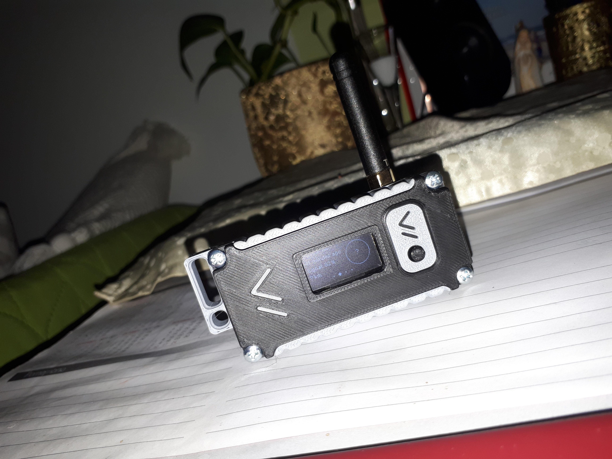
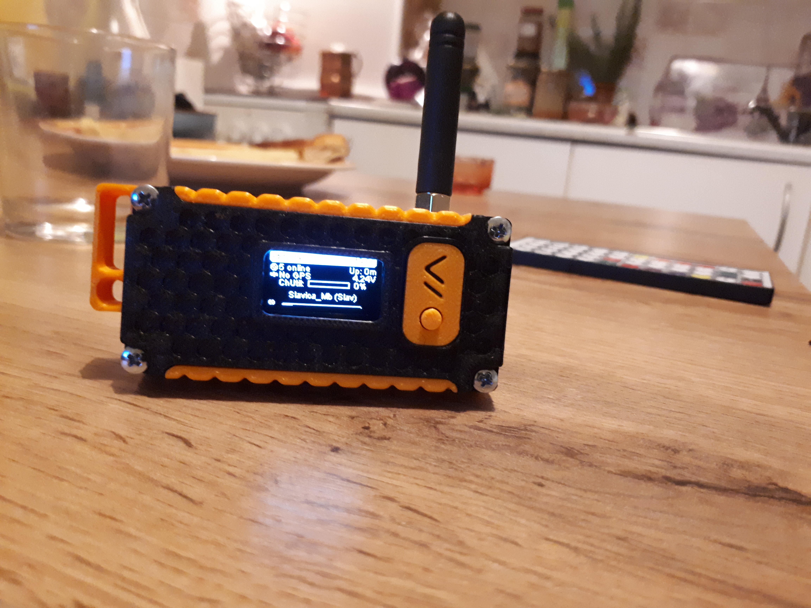
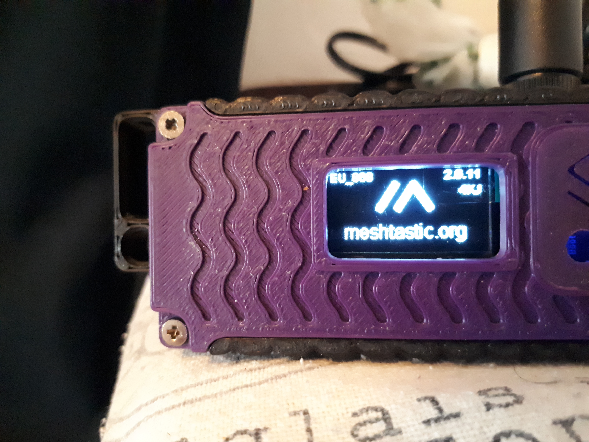

📡 Novi oblici komunikacije - Meshtastic
Meshtastic je otvoreni projekt za izgradnju LoRa mesh mreže za razmjenu kratkih poruka bez mobilne mreže ili interneta. Koristi male radio uređaje (npr. LILYGO T-Beam, T-Echo, LoRa32) temeljene na ESP32 ili nRF52840 mikrokontrolerima, s LoRa RF čipovima kao što su SX1276, SX1262 i SX1280.
Podržani LILYGO Meshtastic uređaji
T-Deck Meshtastic
ESP32 pločica s Wi-Fi i Bluetooth, LoRa transceiver SX1276/SX1262, GPS (NEO-6M ili NEO-M8N), držač za 18650 bateriju. Dostupne verzije za 433/868/915/923 MHz. Idealno za terensku upotrebu s GPS praćenjem i mobilnom baterijom.

T-Beam SUPREME Meshtastic
Novija varijanta s ESP32-S3 (WiFi & Bluetooth 5 LE), LoRa SX1262, NEO-M10S GPS modulom, uključen 1.3" OLED zaslon, BME280 senzor i IMU. Frekvencije: 433/868/915 MHz. Premium opcija s kompletnom opremom.
T3S3 LoRa32
ESP32 s LoRa SX127x/SX1262, OLED zaslonom, microSD konektorom. Verzije za 433/868/915 MHz. Pogodno kao stacionarni ili kućni čvor, povezan na USB napajanje. Kompaktan i povoljan za fiksne postavke.
  
Meshtastic Core MCP RP2040
Modularna pločica bazirana na RP2040 mikrokontroleru, dizajnirana za Meshtastic projekte. Podržava LoRa čipove poput SX1262, kompatibilna je s 868 MHz EU frekvencijom. Nudi fleksibilnost pri izradi custom Meshtastic uređaja s mogućnošću proširenja pomoću dodatnih modula. Idealno za radioamatere koji žele graditi vlastite mesh čvorove.
Raspberry Pi Pico W
Gotovo rješenje temeljeno na RP2040 čipu s integriranim Wi-Fi i Bluetooth LE (BLE) modulom. Kada se poveže s LoRa modulom (SX1262), postaje potpuno funkcionalan Meshtastic uređaj. Raspberry Pi Pico W je široko dostupan, jeftin i pogodan za eksperimentiranje i prototipiziranje mesh mreža. Odličan izbor za početnike i hobi projekte.